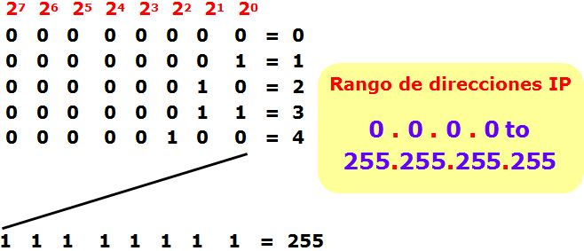

Direccionamiento IP y Subredes
Conversión binario a decimal
- Un octeto contiene 8 bits, cada bit valdrá 0 o 1.
- Esto es, 28 = 256 combinaciones.
- Valor posicional: 2n.
- Suma el valor posicional cuando el bit es valor 1.

Ejemplo de conversión binario a decimal:
Convertir el número binario 10010010 a número decimal:
| 128 | 64 | 32 | 16 | 8 | 4 | 2 | 1 | Operación | Resultado | ||
| 1 | 0 | 0 | 1 | 0 | 0 | 1 | 0 | 128 + 16 + 2 | 146 |
La conversión es la suma de los valores posicionales de los dígitos con valor 1.
Ejemplo de conversión decimal a binario:
Convertir el número decimal 238 a número binario:
| 128 | 64 | 32 | 16 | 8 | 4 | 2 | 1 | Operaciones | Resultado | ||
| 1 | 1 | 1 | 0 | 1 | 1 | 1 | 0 | Posición 7: 238 - 128 = 110 Posición 6: 110 - 64 = 46 Posición 5: 46 - 32 = 14 Posición 4: 14 - 16 (no es posible) Posición 3: 14 - 8 = 6 Posición 2: 6 - 4 = 2 Posición 1: 2 - 2 = 0 Posición 0: 0 - 1 (no es posible) |
11101110 |
La conversión es la colección de los dígitos con valor 1 en donde se puede efectuar la resta entera entre el valor decimal (residuo) y el valor posicional del dígito binario, y con valor 0 donde no es posible, comenzando desde la posición más significativa, hasta alcanzar el residuo decimal 0.